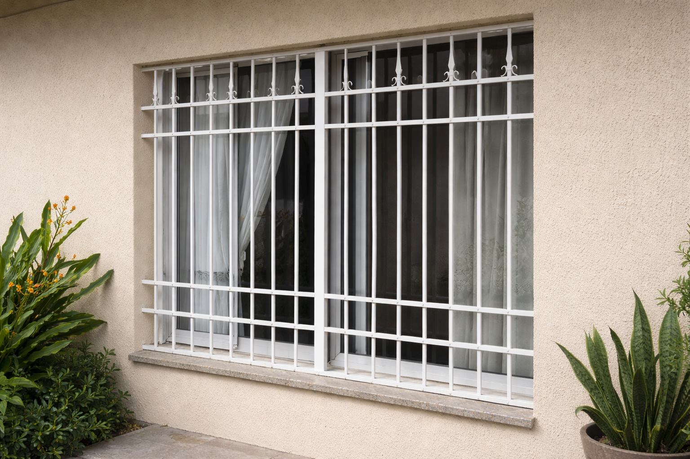
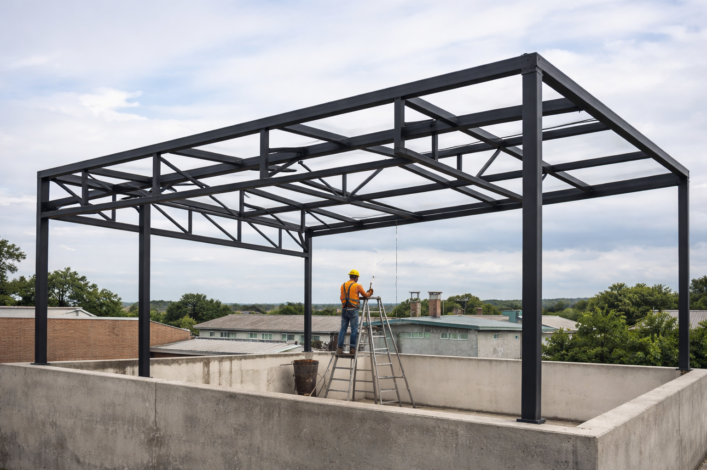
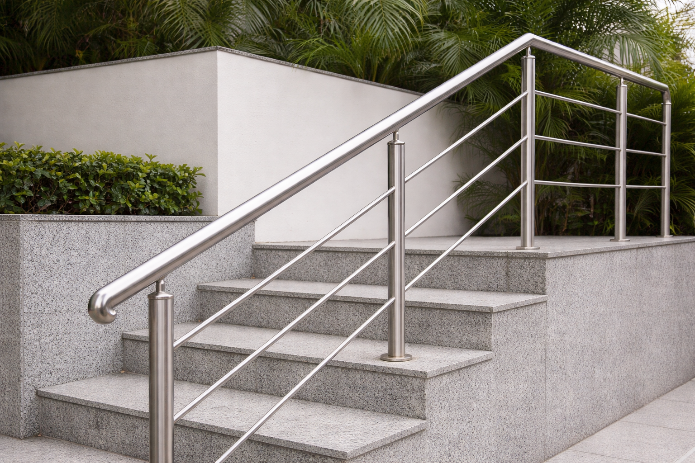

Serviços
Portões de correr / basculantes
Fabricação sob medida, estrutura reforçada, opção de automatização e instalação alinhada.

Grades e reforços
Grades para janelas, portas e reforços de segurança residencial e comercial.

Estruturas metálicas
Estruturas para coberturas, mezaninos, suportes e projetos sob medida.

Corrimão e guarda-corpo
Corrimãos e guarda-corpos metálicos com acabamento limpo e seguro.
 Manutenção e ajustes
Manutenção e ajustes
Solda, alinhamento, troca de peças, ajustes em portões e grades que travam.
Como funciona
1. Contato
Você chama no WhatsApp e envia fotos, medidas e localização.
2. Orçamento
Retornamos com valor estimado, prazo e detalhes do serviço.
3. Execução
Fabricação, instalação ou manutenção conforme combinado.